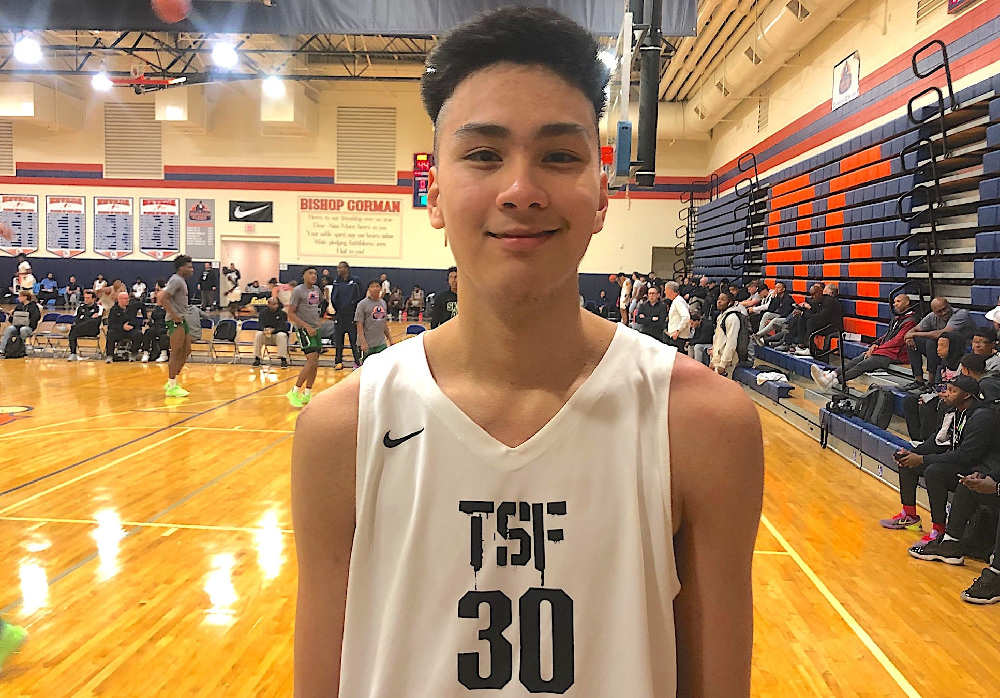

PHILPAM
WATCH: Harry Styles performs 'As It Was,' 'What Makes You Beautiful,' 'Sign of the Times' at Philippines 2023 concert
https://youtu.be/h1TK-6GD89k
MANILA, Philippines— Harry Styles performed some of his most popular songs at the Philippine Arena, which was filled with enthusiastic fans. This was his first visit to the country in five years, having previously performed there in 2015 and 2018 to promote his debut album. Despite not being accompanied by his One Direction bandmates, Harry delighted the audience with a selection of songs from his albums "Harry Styles," "Fine Line," and "Harry's House," which had just won Album of the Year at the 2023 Grammy Awards. The setlist included popular tracks such as "Sign of the Times," "Late Night Talking," "As It Was," "Watermelon Sugar," "Satellite," "Treat People With Kindness," "Matilda," "Daylight," and even One Direction's hit single "What Makes You Beautiful." During the encore, Harry improvised a Banana Song and helped a fan propose during his performance of "Sign of the Times."
More Info
Kai Sotto believes B.League showing ‘only going to get better’ as he adjusts

MANILA, Philippines — Kai Sotto admitted his debut in the Japan B.League left something to be desired but he is confident that things are bound to get better for him and the Hiroshima Dragonflies as the 2022-23 season goes on.
The 7-foot-3 center with 10 points on 4-of-7 shooting and had three blocks, two rebounds, and a steal in 19 minutes only for Dragonflies to fall to the Ryukyu Golden Kings, 86-78, on Wednesday at Okinawa Arena.
“My performance today is not the best but I believe I can get better since it’s my first day here in this league so I’m still adjusting to [everything]. It’s only going to get better,” said Sotto in the post-game interview.
The Dragonflies dropped to 28-11 as Sotto’s former high school rival and Gilas teammate Carl Tamayo got the last laugh despite being benched in his supposed first B.League game.
More Info
CREATOR
Hello! My name is Michael Joshua Pamulagan and I'm a student at Pamantansan ng Lungsod ng Valenzuela. I'm currently studying Bachelor of Science in Information Technology.
Through this website, I aim to make informative newspaper-like website. You'll find few latest news that is related to our country and I hope that it will be informative and engaging for you.
If you have any questions or feedback, please don't hesitate to contact me. Thanks for visiting!
Instagram
Facebook